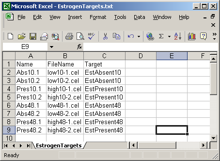

The RNA Targets file, also know as the Hybridizations file, lists the microarray hybridizations and includes for each chip, the name of the CEL file (Cell Intensity File) for that chip, which contains probe-level Perfect Match (PM) and MisMatch (MM) intensities. The Targets file should be in tab-delimited text format, A Targets file has three essential columns : Name, FileName and Target. The Name column should contain a unique name or number for each chip. The FileName column should contain the names of the CEL files. The Target column should contain a name of the type of RNA being hybridized to that chip, which is used to identify replicate chips. For example, in the Estrogen example, the first two chips have different names: "Abs10.1" and "Abs10.2", but they have the same RNA target, "EstAbsent10". Extra columns can be added if desired, but currently, only the Name, FileName and Target columns are used.
An example is shown below.
Currently there is no way to manually specify a Chip Definition File (CDF). It is downloaded automatically from http://www.bioconductor.org/data/metaData.html. If you are using an Affymetrix chip which is not listed on this webpage, please contact the Bioconductor mailing list at bioconductor@stat.math.ethz.ch.
The webpage http://www.bioconductor.org/data/metaData.html also provides annotation packages for many commonly used Affymetrix chips. These packages contain gene symbols, gene names, UniGene IDs, and IDs for linking to many other useful sources of gene information. If you are using a chip which does not have an annotation package available on this webpage, you may find that affylmGUI tries to download an annotation package repeatedly, even when it may not exist. This problem will be fixed in future versions of affylmGUI. As with the CDF package, if you have a chip which has no annotation package on the webpage mentioned previously, feel free to discuss this on the Bioconductor mailing list at bioconductor@stat.math.ethz.ch.